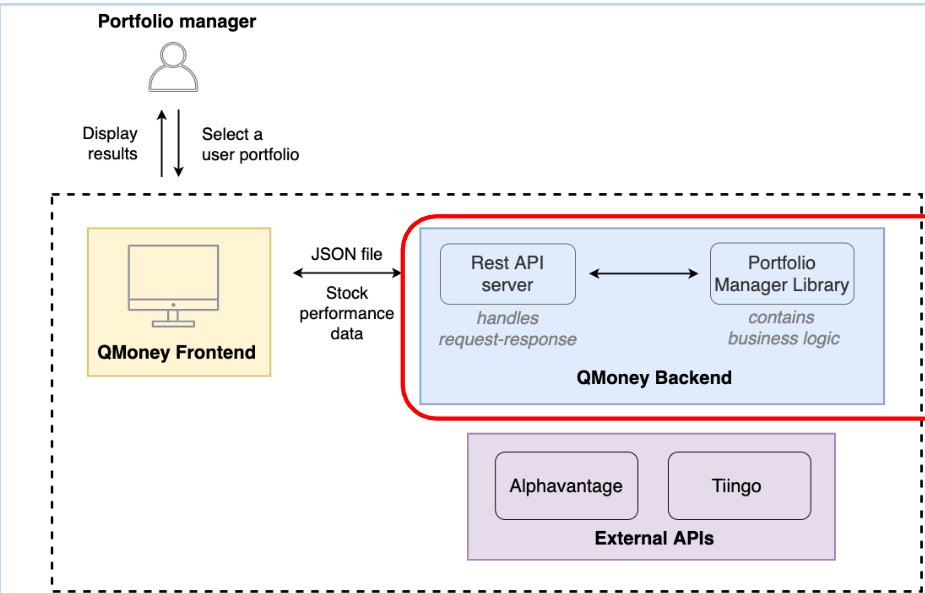

QMONEY :-
Stock Analyzer Tool for Portfolio Managers
Annualized Returns and Absolute Returns

Concepts covered in QMONEY
JSON
Jackson
Consuming REST API
Gradle
Factory Pattern
Exception Handling
Concurrency
Features to be implemnted
Read user portfolio file
Get stock quotes from a third-party provider
Implement logic to perform calculations
Create a portfolio management library
Publish the library
Add another service provider
Handle user issues
Enhance performance of the app
Module 1:-
we learned about JSON objectMapper class which used to parse the data from JSON to POJO and vice versa
learned about annotations of Object Mapper
We have given a Json file Trades.json which contains stocks purchased by the user
File includes :-
Symbol :- company name
Quantity
Trade Type:- buy/sell
Purchased Date
All the buiseness logic is written in PortfollioManager Application.java class
We have to write mainReadFiles method which Deserialize the data from JSON to POJO PortFoliTrades.java and extracts all the Symbols from the data and return them as list .

Module 2:-
Learned about Comperable and comperator interface
Learn about HTTP and it's responses
Learn about REST API and REST TEMPLATE

Working on second part of the problem Means Now we have Symbols from the user portfolio , we have to get the closing price of each trade and arrange them in acending order .
Created readTradesFromJason() function which will give List of trades pojo
End date is given by the program as argument during program run
We have to get token function which will return String which is a token for Tingo
We have made a function called prepareUrl() which creates URL that we required to pass in RestTemplate
So for Trade we have enddate , symbol , token
Than for every Symbol we call TINGO API and get the closing price from there on the particular end date using RestTemplate
We get TingoCandle Array
We have another POJO with us TotalReturnDto which contains symbol and closing price
At the end we sort all the elements on the basis of closing price and return the list.

Module 3:-
Learned about JUNIT testing
In this module we have to calculate the Annualized return for all the stocks and return in decending order
we have written 4 functions
1. getOpeningPriceOnStartDate
2. getClosingPriceOnEndDate
3.mainCalculateSingleReturn
4. calculateAnnualizedReturns
1. In this function List<Candles> is passed as argument and which we have fetched from Tiingo API and passed here we take first term from list as it's the starting price and call getOpen() method of Candle class which is further implemented in TiingoCandle.java class .

2. In this function List<Candles> is passed as argument and which we have fetched from Tiingo API and passed here we take last element as it's the price of stock on final day and call getClose() method of Candle class which is further implemented in TiingoCandle.java class .

We need both these data to calculate the Annualized return of each staock
4. This function is used to Calculate annualized return for any stock which is passed ,endate , portfolioTrade Object ,buyPrice(startPrice) ,sellPrice(endPrice) are passed whichare used to calucate annualized return
Formula we used to calculate annualized return :- (1+total_returns) ^ (1/total_num_years) -1

3. In this function we will get String args as input parameter
So we use args[0] to get the List<PortfolioTrade> trades using readTradesFromJson
endDate is passed as args[1]
We convert the end date to LocalDate format
And make List<Annualizedreturn> to return as ans of this function
Now for each PortfolioTrade we have to calculate annualized return and store it in a list and return this list at the end uses all the functions we have made above to calculate and make list .
We use comparator to arrange the annualized return in decending order